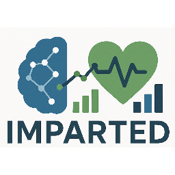
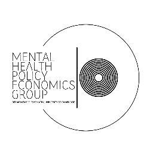

Vanessa Cieplinska
PhD student

Alua Yeskendir
PhD student
Administrative Data Research UK is a UK-wide partnership that links and safely shares de-identified public sector administrative data with accredited researchers to generate policy-relevant insights and improve people’s lives.

Change, Grow, Live provides a range of services to support individuals, families and communities whose lives are adversely affected by crime, substance misuse, homelessness, anti-social behaviour, domestic violence, social deprivation and lack of opportunity. The charity works with challenging service users with complex needs, including those with entrenched drug habits and offending behaviour.
The Complex Emotions Hub, based at the University of Sheffield and led by Professor Scott Weich, is focused on improving the understanding and care of individuals who experience complex emotional difficulties, such as difficulty managing relationships, emotional regulation, and impulsivity.
DATAMIND, coordinated from Swansea University and led by Professors Ann John and Robert Stewart, is the mental health data science hub of the Mental Health Platform. It’s a multi-site data organisation which has been a resource for researchers, the NHS, charities, policy makers and industry since 2021, and is now one of the six Hubs of the Mental Health Platform.
Health Data Research UK is the national institute for health data science, uniting and improving health and care datasets across the UK to enable trustworthy, large-scale data-driven research that advances understanding of disease and improves health and care.

North London NHS Foundation Trust provides specialist mental health and community health services for children, young people, adults and older people across North London, including support for those experiencing severe and enduring mental illness, crisis, or complex psychological and social needs.

South London and Maudsley NHS Foundation Trust provides specialist mental health and substance use services for children, young people, adults and older people, serving local communities in Croydon, Lambeth, Lewisham and Southwark as well as people referred from across the UK to its national specialist units.
The Social Health Hub, based at Queen Mary University of London and led by Professor Jennifer Lau, is generating new knowledge on how the conditions in which people are born, grow, work, live, and age influence how severe mental illnesses affect people over time, and shape how people respond to their conditions.

Turning Point provides health and social care services for people with a learning disability and also people at risk of, or with a mental health diagnosis, mental health issues, drug or alcohol use, misuse or dependency, or other addictive behaviours.
The applied informatics for Mental Health lab, led by Professor Joseph Hayes, uses data science, electronic health records, and digital health methods to improve physical and mental health outcomes, focusing on personalised medicine, drug repurposing, and ecological momentary assessment for people with mental illness.
Exploring Mental Illness Using Systems Thinking, led by Dr Jen Dykxhoorn, uses systems thinking to study the social and environmental causes of severe mental illness, self-harm, and suicide, with a particular focus on socially excluded and marginalised populations such as migrants and minority ethnic groups.

Improving Mental and Physical health Analytics through RobusT Epi and Data sci, led by Dr Naomi Launders, uses electronic health records, census, and cohort data to understand and reduce inequalities in the detection, treatment, and physical health outcomes of people with severe mental illness, with a strong focus on improving access to evidence-based care and leveraging advanced causal methods in observational data.

The Mental Health | Policy | Economics Group, led by Dr Andres Roman-Urrestarazu, integrates psychiatry, public health, economics, and policy to understand how socio-economic determinants and digital-era challenges shape mental health, focusing on marginalised populations and global mental health.
Psylife, led by Professor James Kirkbride, is an epidemiological research group that applies causal inference and population health methods to investigate and prevent social inequalities in the determinants of psychosis and other mental health problems across the life course, with work that directly informs NICE guidelines and mental health policy and service planning.